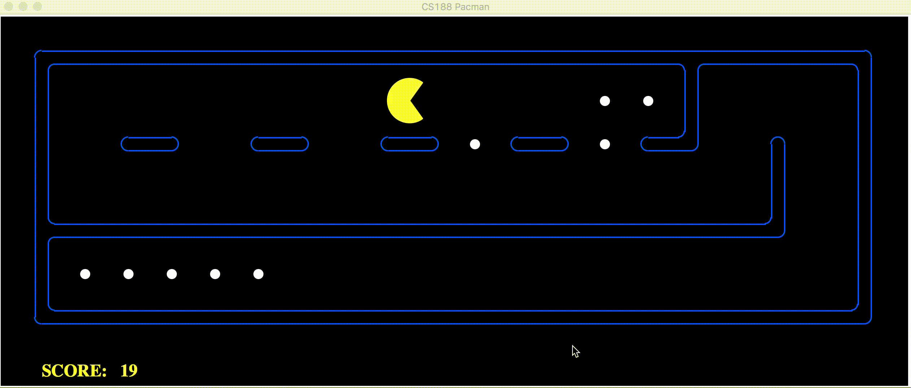

Classical Search
This lesson is about classical search methods under the two categories of informed and uninformed search. We'll be reviewing methods like depth first search, breadth first search, uniform cost search, and A* search.
Uninformed Search
These strategies have no additional information about states beyond that provided in the problem definition, so they can only proceed by generating successors until they find a goal state. Example of such problems is route finding.
Tree Search (Source)
A tree structure is a hierarchy of linked nodes where each node represents a particular state. Nodes have none, one or more child nodes. A solution is a path from the "root" node (representing the initial state) to a "goal" node (representing the desired state). Tree search algorithms attempt to find a solution by traversing the tree structure - starting at the root node and examining (expanding) the child nodes in a systematic way.
Tree search algorithms differ by the order in which nodes are traversed and can be classified into two main groups:
- Blind search algorithms (e.g. "Breadth-first" and "Depth-first") use a fixed strategy to methodically traverse the search tree. Blind search is not suitable for complex problems as the the large search space (number of different possible states to search) makes them impractical given time and memory constraints.
- Best-first search algorithms (e.g. "Greedy" and A*) use a heuristic function to determine the order in which nodes are traversed, giving preference to states that are judged to be most likely to reach the required goal. Using a "heuristic" search strategy reduces the search space to a more manageable size.
A search strategy is complete if it is guaranteed to find a solution if one exists. A search strategy is optimal if it is guaranteed to find the best solution when several solutions exists.
Breadth First Search
Breadth-first search starts at the root of the tree and examines all nodes at the same level before examining nodes at the next level.

As breadth-first search exhaustively examines every node at a particular depth before progressing to the next level, it is guaranteed to find the solution, if one exists, with the shortest path from the initial state. A disadvantage of breadth-first search is that it can have a high memory requirement - as a record needs to be maintained of every expanded node.
Depth First Search
Depth-first search starts at the root node and continues down a particular path (branch) - selecting a child node at the deepest level of the tree to expand next. Only when the search hits a dead end (a node that has no child nodes) does the search "backtrack" - continuing the search from the last node it encountered whose child nodes have not been fully examined.

Unlike breadth-first search, depth-first search is not guaranteed to find the solution with the shortest path. As it is possible for depth-first search to proceed down an infinitely long branch, without ever returning to explore other branches, there is no guarantee that depth-first search will ever find a solution, even when one exists. The memory requirements of depth-first search are more modest than breadth-first search. Only a single path from the root node to the current node, plus any unexpanded nodes on the path, need to be stored.
Iterative Deepening Depth-First Search
Iterative deepening depth-first search (IDDFS) operates like depth-first search - apart from that the algorithm imposes a limit on how deep the search traverses. Until a goal state is found, the search is repeated with an increased depth limit.
Iterative deepening depth-first search combines advantages of both breadth-first and depth-first search. By continuously incrementing the depth limit by one until a solution is found, iterative deepening depth-first search has the same strength as breadth-first search regarding always finding the shortest path to a solution. By using a depth-first approach on every iteration, iterative deepening depth-first avoids the memory cost of breadth-first search.
Uniform Cost Search
Uniform Cost Search is the best algorithm for a search problem, which does not involve the use of heuristics. It can solve any general graph for optimal cost. Uniform Cost Search as it sounds searches in branches which are more or less the same in cost.
Uniform Cost Search again demands the use of a priority queue. Recall that Depth First Search used a priority queue with the depth upto a particular node being the priority and the path from the root to the node being the element stored. The priority queue used here is similar with the priority being the cumulative cost upto the node. Unlike Depth First Search where the maximum depth had the maximum priority, Uniform Cost Search gives the minimum cumulative cost the maximum priority. The algorithm using this priority queue is the following:
Insert the root into the queue While the queue is not empty Dequeue the maximum priority element from the queue (If priorities are same, alphabetically smaller path is chosen) If the path is ending in the goal state, print the path and exit Else Insert all the children of the dequeued element, with the cumulative costs as priority
Uniform-Cost Search is a variant of Dijikstra’s algorithm. Here, instead of inserting all vertices into a priority queue, we insert only source, then one by one insert when needed. In every step, we check if the item is already in priority queue (using visited array). If yes, we perform decrease key, else we insert it.
This variant of Dijsktra is useful for infinite graphs and those graph which are too large to represent in the memory. Uniform-Cost Search is mainly used in Artificial Intelligence.
Uniform-Cost Search is similar to Dijikstra’s algorithm . In this algorithm from the starting state we will visit the adjacent states and will choose the least costly state then we will choose the next least costly state from the all un-visited and adjacent states of the visited states, in this way we will try to reach the goal state (note we wont continue the path through a goal state ), even if we reach the goal state we will continue searching for other possible paths( if there are multiple goals) . We will keep a priority queue which will give the least costliest next state from all the adjacent states of visited states .
Dijkstra's Algorithm: Dijkstra's Algorithm allows you to calculate the shortest path between one node (you pick which one) and every other node in the graph.
- Mark your selected initial node with a current distance of 0 and the rest with infinity.
- Set the non-visited node with the smallest current distance as the current node
C. - For each neighbour N of your current node
C: add the current distance ofCwith the weight of the edge connectingC-N. If it's smaller than the current distance ofN, set it as the new current distance ofN. - Mark the current node
Cas visited. - If there are non-visited nodes, go to step 2.
Informed Search
Uniform Cost search - expands out equally in all directions, may expend additional effort getting to a fairly direct path to the goal.
Greedy best-first search - expands outward toward locations estimated as closer to the goal. If a direct path is available, expends much less effort than Uniform Cost; however, it does not consider any routes in which it may need to temporarily take a further away path in order to arrive at an overall shorter path.
A* Search - utilizes both of these - will try to optimize with both the shortest path and the goal in mind.
Greedy Search
Nodes are evaluated using a heuristic function. The heuristic function estimates how close a node is to the goal state. The sequence in which nodes are traversed is ordered, with the nodes considered closest to the goal state being expanded first.
Like depth-first search, greedy search is not complete. Greedy search is not guaranteed to find the solution with the shortest path. It is possible for greedy search to proceed down an infinitely long branch without finding a solution, even when one exists.
A* Search
A* (A star) is a search strategy used for finding an efficient path between two points (represented as nodes in the tree structure). Like greedy search, a heuristic function is used to guide the order in which nodes are expanded. Unlike greedy search, with A* the heuristic function also takes into account the existing cost from the starting point to the current node. The "cost" is calculated as the sum of a) the cost from the starting point to the current node and b) the estimate of how close the current node is to the goal state.
Like breadth-first search, A* search is complete - it will always find a solution if one exists. For A* search to be optimal it must be used with an admissibile heuristic. An admissibile heuristic, also known as an optimistic heuristic, never overestimates the cost of reaching the goal.
When A* search reaches a goal state it has found a solution with a total cost less than or equal to the estimated cost of any unsearched paths. If the estimated costs are optimistic then the true cost of any solutions discovered by traversing the unsearched paths are guaranteed to be no better than solution already found.

A disadvantage of A* search is that, as it needs to maintain a list of unsearched nodes, it can require large amounts of memory. Variations of A* that require less memory include Iterative Deepening A* (IDA*) and Simplified Memory Bounded A* (SMA*).
Jump Point Search is a variant of A* search which is about 100x times faster. Read more about it here
Problems with Search
We could only use search for solving a problem if it has the following characteristics:
- Fully observable: Must be able to see what initial state we start out with.
- Known: Must know the set of available actions to us.
- Discrete: Must be a finite number of actions to choose from.
- Deterministic: Must know the result of taking an action.
- Static: Must be nothing else that can change the world other than our own action.
Coding Exercise: game of PacMan
In this exercise, you will teach Pac-Man to search his world to complete the following tasks:
- find a single obstacle.
- find multiple obstacles.
- find the fastest way to eat all the food in the map.
This lab is possible thanks to the generous contributions of the UC Berkeley AI division and their work on the Pac-Man Project. The below is an example of what your AI will help Pac-Man do by the end of this lab!

Instructions: